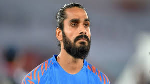
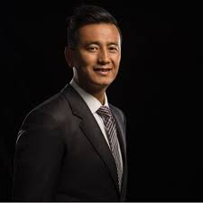
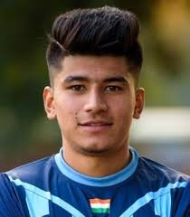
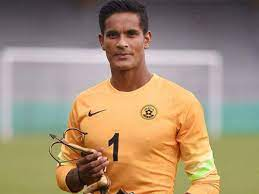

Sunil Chhetri is an Indian professional footballer and one of the most prominent names in Indian football history.
He was born on August 3, 1984, in Secunderabad, Telangana, India. Sunil Chhetri's incredible talent and leadership on the field have made him the captain of the Indian national football team and a revered figure in Indian football.
Achivement and Awards:
1.Arjuna Award
2.Padma Shri
3.AIFF Player of the Year
4.Hero of the Match
Sunil Chhetri's dedication to football and his leadership on and off the field have made him a role model for aspiring footballers in India. His passion for the game and his relentless pursuit of excellence have
made him one of the most beloved sports personalities in the country.
SANDESH JHINGAN

Sandesh Jhingan is an Indian professional footballer who has been a significant presence in the Indian football scene. He was born on July 21, 1993, in Chandigarh, India.
Sandesh Jhingan's strong defensive skills and leadership qualities have made him one of the top defenders in Indian football.
Achivement and Awards:
1.Arjuna Award
2.AIFF Emerging Player of the Year
3.Hero of the Match
Sandesh Jhingan's performances have earned him praise from fans and fellow footballers alike. He continues to be a key figure in the Indian national team and a vital player for Kerala Blasters FC in the Hero ISL.
His dedication to football and his defensive prowess have made him a favorite among Indian football enthusiasts.
BHAICHUNG BHUTIA

"Bhaichung Bhutia" is an Indian former professional footballer who is widely regarded as one of the greatest footballers in Indian history. He was born on December 15, 1976, in Tinkitam, Sikkim, India.
Bhaichung's exceptional skills and leadership on the field have earned him numerous accolades and awards throughout his football career.
Achivement and Awards:
1.Arjuna Award
2.AIFF Player of the Year
3.adma Shri
4.SAFF Championshipation (SAFF) Championship
5.Nehru Cup
Bhaichung Bhutia's impact on Indian football has been immense, and he remains an inspiration for many aspiring footballers in the country. His contributions to the sport, both as a player and as a mentor after retirement
have left a lasting legacy in Indian football history.
ANIRUDH THAPA

Anirudh Thapa is an Indian professional footballer born on January 15, 1998. He is best known for his contribution as a midfielder for both the Indian national team and Chennaiyin FC in the Indian Super League (ISL).
Achivement and Awards:
1. AIFF (All India Football Federation) Emerging Player of the Year
2.FPAI (Football Players Association of India) Young Player of the Year
As for his international career, Thapa has represented India at various levels and made his senior national team debut in 2017. He has been an integral part of the Indian national team's midfield, helping the team in various tournaments and qualifying matches.
SUBRATA PAL

Subrata Pal is an Indian professional football goalkeeper, born on November 24, 1986, in Sodepur, West Bengal, India. He is widely regarded as one of the finest goalkeepers in Indian football history.
Pal's football journey began at the grassroots level, and he quickly gained recognition for his outstanding shot-stopping abilities. In 2004, he made his professional debut for Mohun Bagan in the I-League, where he showcased his skills and caught the attention of football enthusiasts and scouts.
Achivement and Awards:
1. AIFF (All India Football Federation) Player of the Year
2. FPAI (Football Players Association of India) Indian Player of the Year
3. Hero of the I-League
4. Nehru Cup
Subrata Pal has also represented India at various international tournaments, including the AFC Asian Cup and SAFF Championship, solidifying his position as a key player for the national team.